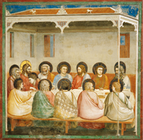

VINCI, Leonardo da. A última ceia , 1495-98. Têmpera em gesso, 460cm x 880cm. Santa Maria delle Grazie, Veneza.
Leonardo da Vinci/Santa Maria delle Grazie, Milão, Itália
A palavra “renascença” significa “ato ou efeito de nascer novamente ou de ressurgir”. A ideia de renascimento ganhou terreno na Itália, sobretudo durante o século XV, como reação ao longo período medieval vivido sob domínio da Igreja. Quando se desejava elogiar um artista, dizia-se, naquela época, que sua obra era tão boa quanto a dos antigos, referindo-se aos povos que tiveram seu auge sob domínio da Grécia e, posteriormente, de Roma.
Nesse contexto, surgiu o movimento cultural chamado Renascimento, desenvolvido em toda a Europa de meados do século XIV ao final do século XVI. Esse movimento valorizou os ideais greco-romanos e enalteceu o Humanismo, trazendo uma nova forma de ver o mundo e de se relacionar com a arte.
Este capítulo busca examinar o contexto sociocultural renascentista, com destaque para as fases do Renascimento e da Alta Renascença, bem como as principais mudanças no cenário artístico, especialmente na arquitetura e na escultura.
Neste capítulo serão abordadas as habilidades EM13LGG601, EM13LGG602, EM13LGG603 e EM13LGG604.
CIMABUE. Santa Trinita Madonna (1280-1290). Têmpera sobre painel, 385 cm x 223 cm. Galeria Uffizi, Florença, Itália.
Eugene/Wikimedia Commons/Galeria Uffizi, Florença
GIOTTO. Madonna e Criança, c. 1320-30. Têmpera sobre painel, 85 cm x 62 cm. Galeria Nacional de Arte, Washington, DC.
DcoetzeeBot/Wikimedia Commons/Galeria Nacional de Arte, Washington, D.C.
Renascimento cultural
Na Europa Ocidental, durante a Idade Média, a Igreja Católica dominava os aspectos culturais e políticos, valorizava apenas o plano espiritual e deixava de lado as necessidades materiais da população. Foi um período marcado por perseguições ao pensamento científico, realizadas, em especial, pela instituição do Tribunal da Santa Inquisição. Esse cenário contribuiu para que muitos estudiosos considerassem a Idade Média um período de retrocesso em relação à Antiguidade Clássica.
Entretanto, é importante salientar que foi durante os últimos séculos da Idade Média que ocorreram as mudanças responsáveis pelo estabelecimento de uma nova sociedade, voltada para as pessoas em si e suas realizações. No início da Idade Moderna, a Europa, mais precisamente a Península Itálica, foi marcada pela propagação de conceitos humanistas – antes restritos aos membros do clero católico – entre pensadores, críticos, escritores e artistas.
Foi também na Idade Média, em torno dos séculos XII e XIII, que surgiu a classe social da burguesia. Com o final das Cruzadas e a abertura do Mar Mediterrâneo, o comércio começou a se desenvolver e os habitantes dos burgos passaram a promover o comércio de mercadorias, como roupas, especiarias e joias, e também a prestação de serviços.
O comércio com o Oriente, realizado especialmente pelos mercadores de Gênova e Veneza, na Europa Ocidental, viabilizou o consumo de produtos raros. Além disso, proporcionou grandes lucros aos comerciantes, bem como trocas culturais, que, aos poucos, levaram novos costumes e conhecimentos às sociedades europeias.
METSYS, Quentin. O prestamista e sua esposa , 1514. Óleo sobre tela, 70 cm x 67 cm. Museu do Louvre, Paris. A obra representa um casal cuja ocupação era o empréstimo a juros, atividade característica da classe burguesa.
Erich Lessing/Album/Fotoarena/Museu do Louvre, Paris
O espírito do Renascimento
O Humanismo pode ser considerado o principal valor cultivado no Renascimento, fundamentado em conceitos que tiveram origem na Antiguidade Clássica. O movimento humanista ficou marcado pelo retorno ao estudo da cultura clássica e pelo antropocentrismo – em oposição ao teocentrismo . Os humanistas contestavam a cultura medieval e buscavam a valorização da humanidade, da sociedade, dos aspectos do mundo natural, das artes, do raciocínio lógico e das ciências.
O Humanismo foi também um movimento literário e um método de aprendizado com amplos interesses, entre eles a Filosofia. Ao valorizar a razão individual, esse movimento propunha uma nova metodologia de análise das evidências empíricas, em oposição à escolástica medieval (cujo método estava alicerçado na Filosofia de Aristóteles), à consulta às autoridades do passado e aos primeiros padres da Igreja, valorizando o debate sobre as diferenças entre autores e comentaristas. No entanto, o Humanismo não descartou essas fontes, mas passou a reexaminá-las à luz de proposições novas e de textos antigos que foram redescobertos.
A partir do século XV, o Humanismo consolidou-se e os autores quediscorreram sobre os variados aspectos do mundo natural, da sociedade, das artes e do pensamento ganharam destaque, como Leonardo Bruni (1370-1444), Erasmo de Roterdã (1466-1536), Francis Bacon (1561-1626), Michel de Montaigne (1533-1592), Giordano Bruno (1548-1600), Thomas More (1478-1535), entre outros. Suas obras representavam escolas e princípios diversos, como hedonismo , antropocentrismo, racionalismo e muitos outros. Além disso, houve a retomada do estudo da língua grega, abandonada na Itália, que possibilitou uma nova leitura dos textos originais dos filósofos clássicos, como Platão (428/427 a.C.-348/347 a.C.), Aristóteles (384 a.C.-322 a.C.) e outros, gerando novas interpretações e traduções mais exatas, que levaram a uma diferente compreensão dessas ideias.
Renascimento e Humanismo: o homem e o mundo europeu do século XIV ao século XVI
Teresa Van Acker. São Paulo: Ática, 1992.
Este livro apresenta um panorama das transformações socioculturais que marcaram a transição da Idade Média para o Renascimento.
As cidades italianas e os mecenas
No século XIV, a Itália ainda não era um país. As cidades de Florença e Veneza ficavam na rota de comércio que algumas cidades italianas haviam estabelecido com o Oriente, via Mar Mediterrâneo, e estavam se recuperando dos difíceis anos de devastação provocada pela peste negra. Florença e Veneza tiveram um grande crescimento econômico, tornaram-se cidades-Estado e proporcionaram riqueza e poder a seus comerciantes.
Durante esse período, houve amplo desenvolvimento comercial, fortalecimento de grandes bancos e expansão das tecelagens. Aos poucos, a Itália tornou-se mais urbana do que o restante da Europa, o que levou à contratação de muitos artistas para trabalhar em igrejas e prédios públicos. A maioria dessas contratações era feita por ricos comerciantes, que ficaram conhecidos como mecenas . Eram eles que permitiam aos artistas viver exclusivamente dos ganhos que obtinham nas encomendas artísticas. Além disso, o mecenato protegia os artistas politicamente e lhes dava prestígio social.
A Igreja Católica foi uma das grandes patrocinadoras da arte durante o Renascimento. O mecenato da Igreja patrocinava muitos artistas e foi responsável por diversas obras importantes. Nesse sentido, as pinturas apresentavam temas religiosos ou a figura de Cristo, como era comum na Idade Média. No entanto, a partir de 1300, os mestres italianos começaram a realizar algumas experiências que alterariam definitivamente a arte europeia, como a sugestão de volume e de músculos. As experiências artísticas foram vistas como um afastamento da vontade de Deus, com perigo iminente de punição por meio da peste negra, por isso houve reestruturação na pintura e abandono dos experimentos de sugestão de volume e músculos. Desse modo, as pinturas da segunda metade do século XIV retomaram o estilo da Idade Média, isto é, sem referência a volume.
A arquitetura, que era considerada do campo da arte, passou a ser vista como ciência exata, regida por elementos matemáticos rigorosos. Com isso, o uso das proporções matemáticas tornou-se recorrente também na representação do corpo humano.
O movimento intelectual mais característico do Renascimento foi o Humanismo. Houve um retorno à cultura clássica, que possibilitou a produção de obras e o desenvolvimento de diversas áreas do conhecimento, por meio da observação, investigação e experimentação.
Os humanistas do Renascimento valorizavam a literatura da Antiguidade Clássica e a usavam para conhecer estilos e características de produção e, principalmente, para analisar a valorização do ser humano e da natureza. Os estudos greco--romanos, que partiam da observação e da experimentação da natureza, serviram de base para os estudos renascentistas.
Fases do Renascimento
O Renascimento rapidamente se alastrou da Península Itálica para várias regiões da Europa. Para fins de estudo e melhor compreensão dos três séculos que provocaram inúmeras e profundas mudanças na arte e na percepção de mundo, esse período é dividido em três grandes fases: Trecento , Quattrocento e Cinquecento . Alguns estudiosos ainda definem o breve intervalo entre as duas últimas fases ( Quattrocento e Cinquecento ) como Alta Renascença.
O Trecento é a primeira fase do Renascimento, definida por alguns estudiosos como Baixa Renascença, e se desenvolveu durante o século XIV (1301-1400), período no qual todos os anos – à exceção do último – iniciam-se com 1300, daí o seu nome. Nessa época, a influência da Igreja Católica ainda era muito forte, por isso os temas religiosos eram predominantes na arte. No entanto, as narrativas bíblicas foram cada vez mais ambientadas em cenários terrenos, o que nos permite dizer que o naturalismo também foi uma das características marcantes dessa fase renascentista. O pintor italiano Giotto di Bondone (1267-1337) foi o principal representante do Trecento.
GIOTTO. Última ceia, c. 1304. Afresco, 200 cm x 185 cm. Cappella Degli Scrovegni, Pádua, Itália.
Erich Lessing/Album/Fotoarena/Cappella Degli Scrovegni, Pádua
O Quattrocento desenvolveu-se durante o século XV (1401-1500). Nesse período, Florença destacou-se como grande centro cultural e artístico da Europa, com o mecenato da família Médici. Ainda hoje, a cidade abriga muitas obras desse período. Na pintura, destacaram-se Fra Angelico ( c . 1395-1455) e Sandro Botticelli (1445-1510); na escultura, Donatello (1386-1466); e na arquitetura, Filippo Brunelleschi (1377-1446).
O chiaroscuro (claro-escuro) é uma técnica aperfeiçoada pelos artistas do Renascimento e que foi amplamente utilizada durante a Alta Renascença.
O contraste entre cores claras e escuras é usado para destacar os elementos principais da obra, bem como produzir o efeito visual de volume, que imprime maior realismo aos personagens e às cenas.
O Cinquecento desenvolveu-se durante o século XVI e marcou o esplendor do Renascimento na Península Itálica. Nesse período, a ideia do homem universal atingiu todas as áreas do conhecimento e se estendeu para diversos países europeus. O ser humano passou a ser pensado sob diversos planos, como o espiritual, o físico, o intelectual, entre outros. Destacaram-se nesse período artistas como Leonardo da Vinci (1452-1519), Michelangelo Buonarroti (1475-1564), Tintoretto ( c . 1518-1594) e Rafael Sanzio (1483-1520).
TINTORETTO, Jacopo Robusti. Cristo diante de Pilatos , 1566-1567. Óleo sobre tela, 515 cm x 380 cm. Scuola Grande di San Rocco, Veneza.
Album/ akg-images/Fotoarena/Scuola Grande di San Rocco, Veneza
A Alta Renascença é entendida como os anos finais do Quattrocento e as primeiras décadas do Cinquecento . Nesse período, Roma passou a ser o centro do Renascimento, com Florença em segundo plano. Essa mudança de destaque se deve, em especial, ao mecenato papal, cujo objetivo era transformar a cidade novamente em um destaque europeu. Esse período recebe o nome de Alta Renascença por representar o amadurecimento dos ideais mais importantes do Renascimento, como o Humanismo, a noção de autonomia da arte, a valorização do artista – que passou a ser visto como um cientista e um erudito – e o conceito de gênio.
Foi assim que alguns artistas do período, como Leonardo da Vinci, Rafael Sanzio e Michelangelo Buonarroti, passaram a personificar o conceito de gênio renascentista. Os padrões estéticos apresentados em suas obras estabeleceram um cânone diferente dos seus predecessores e tiveram ampla aceitação, tornando-se um referencial para a arte europeia. Eles são considerados expressão máxima da Alta Renascença.
Arquitetura renascentista
A arquitetura renascentista resgatou os princípios da Antiguidade Clássica e valorizou aspectos do Humanismo. As partes de um edifício poderiam parecer proporcionais e romper, principalmente, com a estética gótica. Um dos primeiros arquitetos a expressar esses ideais foi Filippo Brunelleschi, que utilizou as pesquisas da época e os elementos greco-romanos para criar um conjunto de obras em Florença, alterando significativamente a paisagem medieval da cidade naquele tempo.
A Basílica de São Lourenço foi construída entre 1419 e 1460 sobre uma pequena igreja fundada por Santo Ambrósio, no ano 393. Idealizada por Brunelleschi e iniciada com o patrocínio da família Médici, foi concluída por Antonio Manetti, fiel ao plano inicial. Está integrada ao centro histórico de Florença.
Richardfabi/Wikimedia Commons
Brunelleschi também foi responsável por uma nova relação com a arquitetura, separando as funções do projetista das do construtor. Os arquitetos desligam-se das corporações de ofícios e passam a atuar, cada vez mais, como intelectuais, afastando-se do trabalho de construção propriamente dito.
A cúpula da Catedral de Santa Maria del Fiore, em Florença, foi construída de maneira inovadora entre 1420-1430 por Brunelleschi. É considerada a primeira obra arquitetônica renascentista.
Francisco Conde Sánchez (CC BY-SA 3.0)/Wikimedia Commons
Escultura renascentista
Durante o Renascimento, a escultura perde a finalidade decorativa. As figuras esculpidas ganharam proporções e expressões semelhantes a pessoas reais. O objetivo era a representação da natureza da maneira mais fiel possível, com valorização dos aspectos naturalistas. As esculturas gregas e romanas da Antiguidade serviram de inspiração para as obras do período – muitas delas apresentam-se em tamanhos monumentais –, destacando a beleza física do ser humano.
Michelangelo Buonarroti, conhecido simplesmente como Michelangelo, foi um dos escultores de destaque dessa época. Teve seu talento reconhecido desde muito jovem e se tornou protegido da família Médici, de Florença, e posteriormente de vários papas. Era chamado de “Divino” e foi considerado, ainda em vida, o maior artista da época. Entre suas obras mais célebres, estão David e Pietà .
MICHELANGELO. David , 1501-1504. Mármore, 517 cm. Galeria da Academia de Artes de Florença. A escultura representa o herói bíblico David momentos antes de enfrentar o gigante Golias.
muratart/Shutterstock.com/Galeria da Academia de Artes de Florença
A obra David tornou-se o símbolo do Renascimento e é considerada um tributo à beleza masculina. Com 5,17 metros de altura e 5,5 toneladas, foi esculpida em um único bloco de mármore, e Michelangelo levou dois anos para completá-la. Representa um jovem adulto, e as mãos grandes sugerem força e capacidade de luta e trabalho.
Michelangelo usou o conceito de contrapposto , ou contraposto clássico, em David . Essa técnica distribui harmonicamente o peso da figura representada em pé, com uma perna flexionada e a outra como principal sustentação do peso, conferindo dinamismo à obra. Essa postura produz curvaturas sutis, como o arqueamento do joelho flexionado, um leve movimento giratório da pélvis, um arqueamento compensatório da coluna vertebral e uma inclinação de ajustamento dos ombros. A postura também confere movimento natural tanto de frente quanto de lado.
Por dentro da arte
Pietà é um grupo escultórico em mármore que, além da beleza, apresenta forte dramaticidade. A obra tornou-se referência para muitas outras.
Michelangelo criou a obra quando tinha apenas 23 anos. Nela, esculpiu uma mãe jovem, com expressão dócil, que contrasta com a dor de recolher o corpo do filho. O artista representou Maria com uma expressão de resignação, em contraste com a angústia com que os artistas da época tradicionalmente a retratavam.
Esculpida em mármore, a obra foi organizada em forma de pirâmide, com deliberada alteração das proporções. Maria tem feições quase infantis, que simbolizam a sua pureza, é maior que Jesus – para transmitir a sensação de acolhimento que a mãe oferece ao filho – e está olhando para o filho no braço. As vestes de Maria e o corpo de Jesus são esculpidos em detalhes.
Antes do Renascimento, os artistas não costumavam assinar as obras. Como Michelangelo era muito jovem quando esculpiu Pietà , muitos não acreditavam que ele fosse o autor da obra, por isso ele teria inscrito na faixa que atravessa o peito da Virgem: “ Michael Angelus. Bonarotus. Florent. Facieba(t)” , que significa “Miguel Angelo Buonarotus de Florença fez”.
MICHELANGELO. Pietà , 1499. Mármore, 1,74 m x 1,95 m x 64 cm. Basílica de São Pedro, Vaticano.
ncristian/iStockphoto.com/Basílica de São Pedro, Vaticano
Valorização da arte greco-romana
Mãos à obra
Vamos experimentar uma criação com porcelana fria, também conhecida como massa de biscuit . A massa pode ser comprada em casas de produtos para artesanato ou preparada artesanalmente.
Materiais
Procedimento
1
Uel-PR A arte renascentista, de uma forma geral, se caracterizou pela
- representação abstrata do mundo.
- estreita relação entre arte-romantismo-melancolia.
- representação cubista da ideia de Deus.
- aproximação entre arte-pesquisa-inovações técnicas.
- valorização estética dos afrescos da antiguidade egípcia.
2
UnB-DF Julgue os itens seguintes, referentes ao Renascimento, colocando VERDADEIRO ou FALSO:
( ) Retomando traços da Antiguidade Clássica, a Renascença significou a ruptura total e absoluta com a cultura medieval.
( ) Iniciado na Península Ibérica, sobretudo por sua forte tradição urbana, o movimento renascentista afastou-se do Humanismo típico da cultura medieval para enaltecer os conteúdos religiosos que emergiam com a crise feudal.
( ) Leonardo da Vinci, personagem-síntese do Renascimento, para quem o homem era o modelo do mundo, notabilizou-se pela atuação diversificada, destacando-se, na pintura, com Mona Lisa.
( ) A atuação dos mecenas, protetores e financiadores dos artistas, deu impulso decisivo ao desenvolvimento da arte renascentista.
3
Enem 2020
Sempre que se evoca o tema do Renascimento, a imagem que imediatamente nos vem à mente é a dos grandes artistas plásticos e de suas obras mais famosas, amplamente reproduzidas e difundidas até os nossos dias, como a Monalisa e a Última ceia , de Leonardo da Vinci, o Juízo final , a Pietá e o Moisés , de Michelangelo, assim como as inúmeras e suaves Madonas , de Rafael, que permanecem ainda como modelo mais frequente de representação da mãe de Cristo. Como veremos, de fato, as artes plásticas acabaram se convertendo num centro de convergência de todas as principais tendências da cultura renascentista.
SEVCENKO, N. O Renascimento . Campinas: Atual, 1988 (adaptado).
Esse movimento cultural, inserido no processo de transição da modernidade europeia, caracterizou-se pela
- validação da teoria geocêntrica.
- valorização da integração religiosa.
- afirmação dos princípios humanistas.
- legitimação das tradições aristocráticas.
- incorporação das representações góticas.
4
UEM 2016 Sobre as Artes no Renascimento, assinale o que for correto.
01.
A arquitetura diferenciava-se da arquitetura gótica em diversos aspectos. Todavia, a construção de grandes igrejas só foi possível com preceitos técnicos e estéticos do Renascimento.
02.
Na pintura, os artistas desenvolveram os estudos da perspectiva a partir de uma interpretação científica do mundo, seguindo os princípios da Geometria e da Matemática.
04.
O recurso do claro-escuro foi utilizado pelos artistas e consiste no contraste entre luz e sombra na representação de um objeto.
08.
Leonardo da Vinci foi um artista do período. Por ter se dedicado exclusivamente à pintura, desenvolveu um estilo próprio em uma de suas obras mais famosas, a Mona Lisa.
16.
A Capela Sistina, no Vaticano, possui um afresco de autoria de Michelangelo em seu teto. Além da pintura, o artista dedicou-se a outras formas de arte, como a escultura e a arquitetura.
Soma:
1
Cesgranrio-RJ A Revolução Científica, ocorrida na Europa Moderna entre os séculos XVI e XVII, caracterizou-se por:
- acentuar o espírito crítico do homem através do desenvolvimento da ciência experimental.
- reforçar as concepções antinaturalistas surgidas nos primórdios do Renascimento.
- comprovar a tese de um universo geocêntrico contrária à explicação tradicional aceita pela Igreja Medieval.
- negar os valores humanistas, fortalecendo assim as ideias racionalistas.
- confirmar os fundamentos lógicos e empiristas da filosofia escolástica em sua crítica aos dogmas católicos medievais.
2
Mackenzie-SP O Humanismo foi um movimento que não pode ser definido por:
- ser um movimento diretamente ligado ao Renas-cimento, por suas características antropocentristas e individuais.
- ter uma visão do mundo que recupera a herança greco-romana, utilizando-a como tema de inspiração.
- ter valorizado o misticismo, o geocentrismo e as realizações culturais medievais.
- centrar-se no homem, em oposição ao teocentrismo, encarando-o como “medida comum de todas as coisas”.
- romper os limites religiosos impostos pela Igreja às manifestações culturais.
Superação
UEL-PR O Renascimento, amplo movimento artístico, literário e científico, expandiu-se da Península Itálica por quase toda a Europa, provocando transformações na sociedade. Sobre o tema, é correto afirmar que:
- o racionalismo renascentista reforçou o princípio da autoridade da ciência teológica e da tradição medieval.
- houve o resgate, pelos intelectuais renascentistas, dos ideais medievais ligados aos dogmas do catolicismo, sobretudo da concepção teocêntrica de mundo.
- nesse período, reafirmou-se a ideia de homem cidadão, que terminou por enfraquecer os sentimentos de identidade nacional e cultural, os quais contribuíram para o fim das monarquias absolutas.
- o humanismo pregou a determinação das ações humanas pelo divino e negou que o homem tivesse a capacidade de agir sobre o mundo, transformando-o de acordo com sua vontade e interesse.
- os estudiosos do período buscaram apoio no método experimental e na reflexão racional, valorizando a natureza e o ser humano.